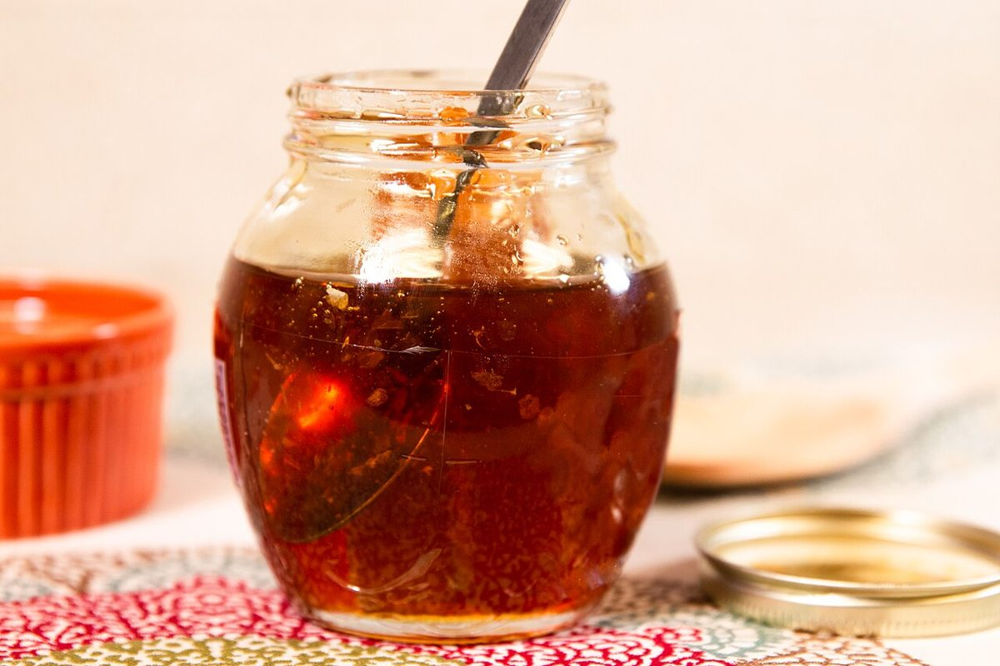
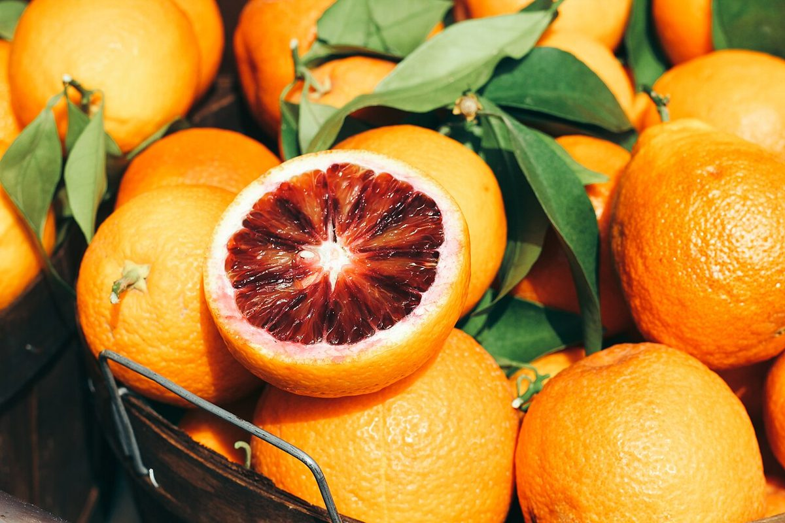

制作側の連想
フードカバーの部位を、配置図にしてみる
フードカバー(食卓用の折りたたみ式の網のおおい)の部位を図にしたもので、制作側の連想です。お店の理念・由来とは無関係で、実際の製品の仕様を示すものでもありません。 六つの部位に番号をふり、上の図と並べています。
凡例
六つの部位
- 1取っ手天面について、持ち上げるときにつまむ小さな輪。
- 2天面リングドームのてっぺんを囲む小さな輪で、網の布の端を支える部分。
- 3メッシュ生地細かい網目の布で、ドーム全体をおおう部分。
- 4骨線ドームの内側で形を保つ、しなりのある細い線。
- 5裾リングいちばん下をぐるりと囲む大きな輪で、テーブルに触れる部分。
- 6縁取りテープ裾の布の端をくるむ帯で、ほつれを防ぐ部分。
写真(イメージ)
写真(イメージ)






写真はイメージです。お店のものではありません。
ご案内
お店のこと(確認できたものだけ)
| 所在地 | 〒670-0937 兵庫県姫路市元塩町73 |
|---|---|
| 電話 | 準備中 |
| 営業時間 | 準備中 |
| 定休日 | 準備中 |
| ご予約 | 準備中 |
| 駐車場 | 準備中 |
| SNS | Instagram @coffeeshopfrida |